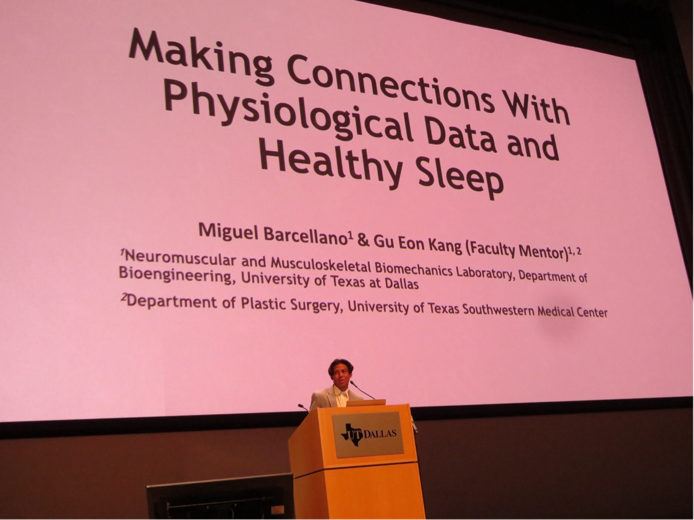

Miguel Barcellano
Passionate about integrating systems thinking and technology to advance healthcare innovation
Bioengineering integrated with systems thinking is crucial for developing innovative solutions that improve human health. I bring a unique perspective by bridging technical innovation with clinical application, while leveraging skills in machine learning, biomechanics, biomaterials research, and data-driven problem solving to translate complex engineering concepts into impactful healthcare solutions. I am particularly interested in wearable health technologies, biomedical innovation, and collaborative co-op and internship opportunities that allow me to apply engineering solutions to real-world clinical and human performance challenges.

Experience
Research & Academic
Graduate Research Assistant
BONE Lab · UT Dallas
Biomaterials research on titanium implants
- Engineered surface-modified titanium implants using ionic-liquid coatings, SEM imaging, and electrochemical testing
- Conducted biomaterials research on implant performance and osseointegration
Depression Severity Classification
Oura Ring & Machine Learning · UT Dallas
ML models using wearable sleep data
- Analyzed wearable sleep and physiological biometrics to investigate links between sleep behavior and depression severity
- Developed ML classification models — Random Forest identified as strongest performer
Undergraduate Research Assistant
Neuromuscular Musculoskeletal Lab · UT Dallas
Gait and EMG biomechanics analysis
- Analyzed gait, motion-capture, and EMG data using Vicon Nexus, Visual3D, and MATLAB
- Supported biomechanics research through statistical analysis and subject recruitment
Senior Design – Cognitive Dual-Tasking & Gait
UT Dallas · Published in PLOS One (2025)
Published biomechanics research on gait and balance
- Analyzed biomechanics and EMG data during gait initiation and sit-to-walk tasks in young adults
- Contributed to published research on balance, mobility, and human movement
Team Member
Worcester Polytechnic Institute · Remote
8-week global engineering internship
- Collaborated with cross-campus teams to engineer solutions for developing countries
- Engaged in workshops focused on career building and cross-disciplinary collaboration
Professional & Leadership
Medical Office Assistant
Texas Joint Institute · Part-time
Clinical operations in orthopedic office
- Supported clinical operations in an orthopedic medical office environment
Scribe Trainer
Scribeology · Plano, TX
Trained medical scribes in clinical documentation
- Trained medical scribes in documentation, clinical workflows, and real-time charting
Peer Advisor
UT Dallas · Part-time
Mentored 24 freshmen residents
- Facilitated social, academic, and personal growth for incoming freshmen in residential halls
- Built close relationships with 24 residents, showcasing leadership and guidance
Orientation Leader
UT Dallas · Part-time
Guided incoming first-year students
- Engaged incoming first-year students with resources, mentorship, and campus tours
Front Desk Assistant
Little Elm Pediatric Dentistry
Patient scheduling and dental office support
- Filed paperwork, answered phones, and scheduled patient appointments
- Assisted dental hygienist with equipment cleaning and patient preparation
Clicklist Associate
Kroger · Part-time
Online grocery order management
- Managed online grocery orders, item selection, and customer vehicle delivery
- Provided onsite and remote customer service
Lifeguard
The Colony Aquatic Park & Bearfoot Lifeguard
First-aid certified pool safety monitor
- Lifeguard, first-aid, and bloodborne pathogen certified
- Monitored pool safety, responded to emergencies, and maintained facility cleanliness
Skills
Programming
Data & Machine Learning
Engineering Tools
Testing & Instrumentation
Domain Expertise
Soft Skills

Certifications
SolidWorks CSWA
Dassault Systèmes
In ProgressMachine Learning & Health Certificate
The University of Texas at Dallas
In ProgressGCP – Biomedical
CITI Program · Jul 2025 – Jul 2028
CertifiedGCP – Social and Behavioral
CITI Program · Jul 2025 – Jul 2028
CertifiedCPR & AED
The University of Texas at Dallas
CertifiedMontreal Cognitive Assessment (MoCA)
MoCA Cognition
Certified